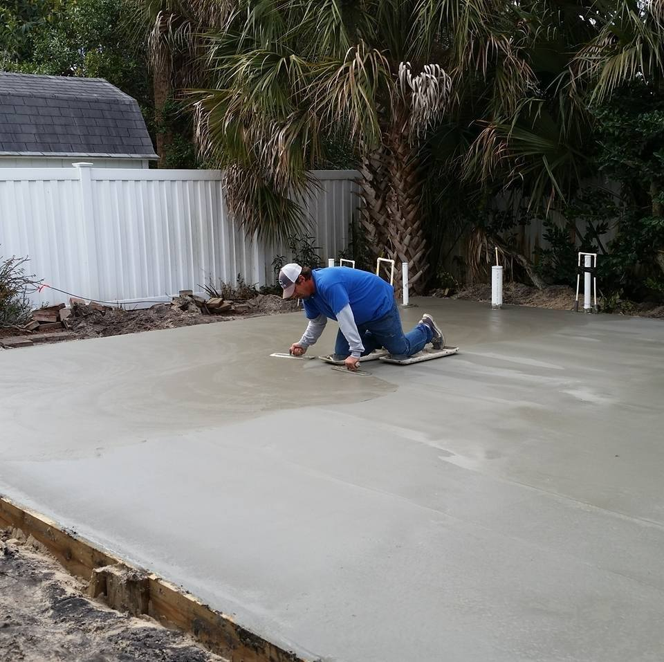

Welcome to Concrete Wally II, your trusted source for exceptional concrete placement in Northeast Florida. We are a seasoned company that has proudly served our community for over four years, delivering top-tier concrete services that meet and exceed our clients' expectations.
Concrete Wally II is a company with a strong foundation, both in terms of our work and our leadership. Founded and led by Wally Jewell, we have a dedicated and experienced team ready to bring your concrete projects to life. With Wally's expertise and vision, we ensure that every job is executed to perfection.
At Concrete Wally II, we take pride in being a specialized Concrete Placement Company. Our focus is on custom concrete installation, and we excel in turning your concrete visions into reality. Whether it's a decorative concrete project, a commercial foundation, or any other concrete need, we have the skills, knowledge, and experience to deliver high-quality results.
When you choose Concrete Wally II, you're choosing a partner committed to quality, professionalism, and the art of concrete craftsmanship. We look forward to working with you to make your concrete projects a success. Contact us today to get started!
Our reach extends to a wide range of locations in Northeast Florida, including:
We are committed to making Northeast Florida a more beautiful and structurally sound place, one custom concrete installation at a time.
Whether you need a new patio, a driveway addition, sidewalk installation, or repairs for your existing driveway, we've got the perfect solution for you. At Concrete Wally II, we offer a comprehensive range of concrete and masonry services tailored to meet your specific needs and enhance your property.
No job is too small or too big for us - we are equipped to handle projects of all sizes, from minor repairs to large-scale installations. Our team is dedicated to delivering exceptional craftsmanship and outstanding results that stand the test of time.
And the best part? We provide FREE ESTIMATES. You can count on our experienced professionals to assess your project, provide a transparent estimate, and deliver top-quality work.
Concrete Wally II proudly serves all areas of Northeast Florida, including Jacksonville Beach, Green Cove Springs, Orange Park, Macclenny, Middleburg, and Jacksonville. We are committed to beautifying your space with durable, stylish, and expertly executed concrete and masonry solutions.
You can find us on social media:
Facebook PageFor inquiries and quotes, feel free to contact us:
Phone/WhatsApp: 1-904-485-7766
Email: concretewally@gmail.com
Whether you need a new patio, a driveway addition, sidewalk installation, or repairs for your existing driveway, we've got the perfect solution for you. At Concrete Wally II, we offer a comprehensive range of concrete and masonry services tailored to meet your specific needs and enhance your property.
No job is too small or too big for us - we are equipped to handle projects of all sizes, from minor repairs to large-scale installations. Our team is dedicated to delivering exceptional craftsmanship and outstanding results that stand the test of time.
And the best part? We provide FREE ESTIMATES. You can count on our experienced professionals to assess your project, provide a transparent estimate, and deliver top-quality work.
Concrete Wally II proudly serves all areas of Northeast Florida, including Jacksonville Beach, Green Cove Springs, Orange Park, Macclenny, Middleburg, and Jacksonville. We are committed to beautifying your space with durable, stylish, and expertly executed concrete and masonry solutions.